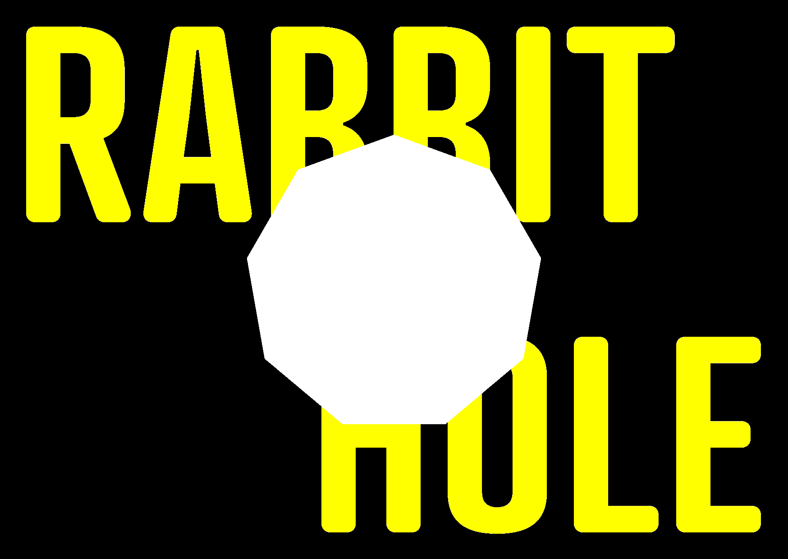

FLUX prolonge le spectacle Rabbit Hole >>> une expérience à installer sur votre téléphone >>> vous y entrez par choix >> ou sous la contrainte >>>> ça dépend des circonstances
Téléchargez le fichier depuis votre téléphone Android, puis ouvrez-le dans vos téléchargements.
Android vous demande si vous acceptez d'installer une application provenant d'une source inconnue. Validez pour continuer.
Lancez FLUX depuis votre écran d'accueil.
Si un message signale une application non vérifiée, choisissez Installer quand même. FLUX est distribué hors du Play Store, Android ne peut donc pas la reconnaître.